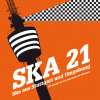
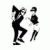
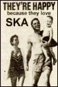

Die Lieder von File Under Ska bei Ska World auf laut.fm:
* Montag 16-17 Uhr
* Dienstag 10-11 Uhr
* Mittwoch 19-20 Uhr
* Donnerstag 16-17 Uhr
* Freitag 10-11 Uhr
* Samstag 19-20 Uhr
* Sonntag 13-14 Uhr
|  | Ausverkauft: SKA 21 - Ein Sampler für das Freie Radio für Stuttgart (CD im Digipack mit 24-seitigem Booklet) |
| FRS-Livestream. Mehr Infos hier. |
|
File Under Ska bei Facebook (Bilder!): www.facebook.com/fileunderska
|  | Die nächsten Konzerte (ohne Gewähr): | |||||||
| Mi, 08.11.2017 | Dreadskin Reggae | Ritter, Heslach | ||||||
| Fr, 10.11.2017 | Django S., Wämmeska | Goldmark's | ||||||
| Fr, 17.11.2017 | Jaya The Cat | KJH Hallschlag | ||||||
| Sa, 02.12.2017 | The Nite Steadies | Südbahnhof Gleis 2, Renningen | ||||||
| Do, 21.12.2017 | New York Ska Jazz Ensemble, No Sports | Keller Klub | ||||||
| Sa, 24.02.2018 | The Busters | Sudhaus, Tübingen | ||||||
| Fr, 09.03.2018 | The Offenders | Goldmark's | ||||||
|
 |